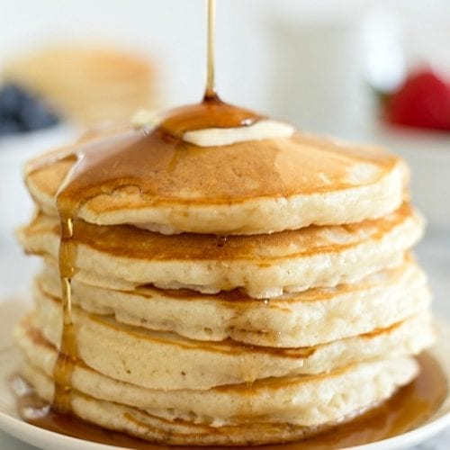

Pancakes

Pancake Recipe made with simple ingredients that takes only a few minutes time. Load these perfect homemade pancakes up with fresh fruit or drown them in your favorite maple syrup.
This simple and delicious pancake recipe by taste member, 'bdittmann88' is perfect for weekend breakfasts.
Ingredients
- 2 Eggs
- 1 3/4 Cup Milk
- 1 Tsp Vannilla Essence
- 2 Cups Self-raising Flour
- 1/3 Cup Caster Sugar
- Butter
- Maple Syrup
Steps
- Whisk eggs,milk and vanilla together in a jug.Stir in sugar. Add milk mixture and whisk until just combined.
- Heat a large non-stick frying pan over medium heat. Grease pan with butter or spray with cooking oil. Using 1/4 cup mixture per pancake, cook 2 pancakes for 2 minutes or until bubbles appear on surface. Turn and cook for a further 1-2 minutes or until cooked through. Transfer to a plate. Cover loosely with foil to keep warm. Repeat with remaining mixture, greasing pan with butter or cooking oil between batches.
- Serve with maple syrup and extra butter.